Unter dem Menüpunkt…
1 WinLine FAKT
1 Einkauf
1 Reservierungen
1 Reservierungen bearbeiten
… können die Reservierungen bearbeitet werden. Das Fenster ist hierbei wie folgt untergliedert:
ü Ansicht und Selektion
Im oberen
Bereich des Fensters (oberhalb der ersten Tabelle) stehen diverse Einstellung
zur Verfügung, mit deren Hilfe der Inhalt der Reservierungstabellen definiert
werden kann.
Hinweis
Die Einstellungen in den Bereichen "Ansicht", "Aufträge" bzw. Bestellungen / wird produziert", "Sortierung", sowie die Option "ohne Kommissionierung", werden benutzerspezifisch gespeichert.
ü Reservierungstabellen
Im
mittleren und unteren Bereich des Fensters werden die Reservierungstabellen
angezeigt. Über diese können die Bedarfszeilen analysiert und Umreservierungen
vorgenommen werden.
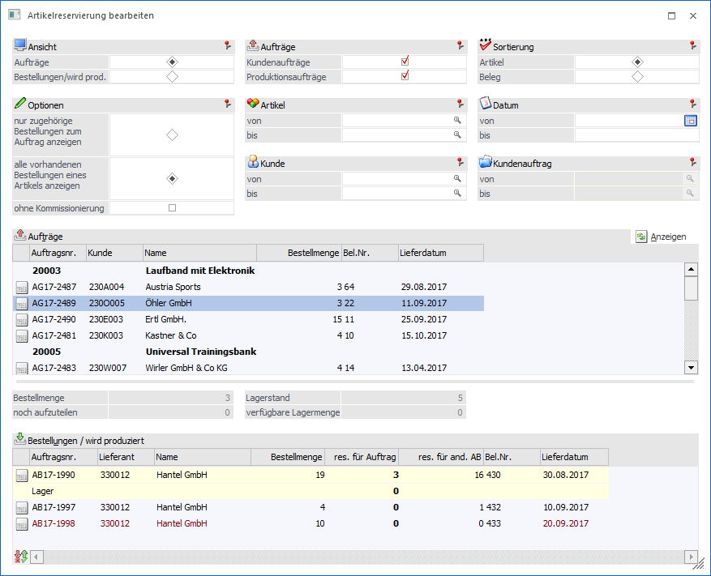
Ansicht
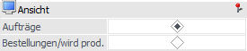
Ø Ansicht
An dieser Stelle wird definiert, in welcher Sichtweise die Tabellen dargestellt werden sollen. Hierbei stehen folgende Varianten zur Verfügung:
ü Aufträge
Es werden für jeden
Auftrag (Kundenaufträge und / oder herzustellende Produktionsaufträge) die
Bedarfszeilen in der oberen Tabelle angezeigt. Die zugehörigen
Lieferantenbestellungen, Produktionsaufträge bzw. die Reservierungsmenge vom
Lager erscheinen in der unteren Tabelle. D.h. woher erhalten die Bedarfserzeuger
die benötigte Menge.
ü Bestellungen/wird prod.
Es
werden für jede Bestellung (Lieferantenbestellung und / oder herzustellende
Produktionsaufträge) die Bedarfszeilen in der oberen Tabelle angezeigt. Die
zugehörigen Kundenaufträge, Produktionsaufträge bzw. die Menge, welche auf das
Lager gebucht wird, erscheinen in der unteren Tabelle. D.h. für welche
Bedarfserzeuger ist die neue Menge vorgesehen.
Aufträge bzw. Bestellungen / wird produziert
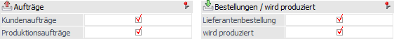
Entsprechenden der Auswahl im Bereich "Ansicht" kann an dieser Stelle angegeben werden, welcher Arten von Aufträgen oder Bestellungen in der oberen Tabelle berücksichtigt werden sollen.
Ø Aufträge (nur bei Ansicht "Aufträge")
Mit Hilfe von Checkboxen kann definiert werden, ob Kundenaufträge und / oder Produktionsaufträge angezeigt werden sollen.
Ø Bestellungen / wird produziert (nur bei Ansicht "Bestellungen/wird prod.")
Mit Hilfe von Checkboxen kann definiert werden, ob Lieferantenbestellungen und / oder zu produzierende Produktionsaufträge angezeigt werden sollen.
Sortierung
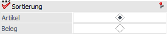
Ø Sortierung
An dieser Stelle kann definiert werden, ob die Sortierung innerhalb der oberen Tabelle nach Artikeln oder nach Belegen erfolgen soll.
Optionen
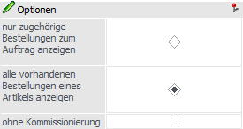
In diesem Bereich wird definiert, welche Bedarfszeilen in der unteren Tabelle angezeigt werden sollen.
Ø nur zugehörige Bestellungen zum Auftrag anzeigen
Bei Aktivierung dieses Radiobuttons werden nur jene Kundenaufträge, Lieferantenbestellungen und Produktionsaufträge in der unteren Tabelle angezeigt, für bzw. von welchen bereits eine Reservierung von der Ausgangszeile (obere Tabelle) durchgeführt wurde. Zusätzlich wird das Lager dargestellt.
Ø alle vorhandenen Bestellungen eines Artikels anzeigen
Bei Aktivierung dieses Radiobuttons werden alle vorhanden Kundenaufträge, Lieferantenbestellungen und Produktionsaufträge in der unteren Tabelle angezeigt, d.h. auch jene, für welche keine Reservierung vorgenommen wurde. Zusätzlich wird das Lager dargestellt.
Ø ohne Kommissionierung
Mit Hilfe der Option "ohne Kommissionierung" kann gesteuert werden, ob Kundenaufträge, welche bereits kommissioniert wurden, angezeigt werden sollen (Option deaktiviert) oder nicht (Option aktiviert).
Selektion
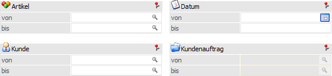
Ø Artikel von / bis
An dieser Stelle kann eine Selektion auf die auszuwertenden Artikel vorgenommen werden.
Hinweis
Wird im Feld "Artikel von / bis" z.B. nur eine Artikelnummer eingegeben und dieser Artikel hat auch noch Ausprägungen, so werden alle Ausprägungen automatisch mit angedruckt. Nur wenn während des Anklickens des "Ausgabe-Buttons" die STRG-Taste gedrückt wird, wird nur der Hauptartikel alleine ausgewertet.
Ø Datum von / bis
An dieser Stelle kann eine Eingrenzung auf den zu betrachtenden Zeitraum erfolgen.
Ø Kunde von / bis bzw. Lieferant von / bis
Entsprechenden der Sichtweise (siehe Bereich "Ansicht") kann an dieser Stelle eine Selektion auf Kunden oder Lieferanten vorgenommen werden.
Ø Kundenauftrag bzw. Produktionsauftrag oder Lieferantenbestellung
Die Selektionsmöglichkeiten an dieser Stelle sind u.a. abhängig von der getroffenen Sichtweise (siehe Bereich "Ansicht").
ü Option "Aufträge"
Wurde im
Bereich "Aufträge" nur "Kundenaufträge" ausgewählt, dann kann auf Kundenaufträge
eingeschränkt werden. Sollte hingegen nur "Produktionsaufträge" aktiviert sein,
dann ist eine Selektion auf Produktionsaufträge möglich.
Hinweis
Wurden im Bereich "Aufträge" beide Auswahlen aktiviert, so kann an dieser Stelle keine weitere Selektion vorgenommen werden.
ü Option "Bestellung/wird
prod."
Es kann eine Selektion auf Lieferantenbestellungen erfolgen.
Tabelle "Bedarfsübersicht"
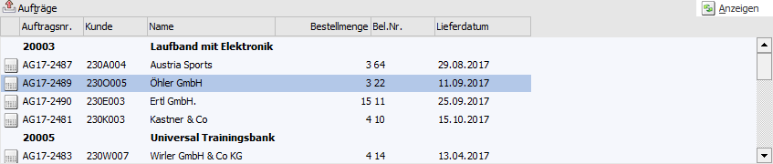
Nach Anwahl des Buttons "Anzeigen" werden innerhalb der oberen Tabelle die Bedarfszeilen gemäß der zuvor getroffenen Sichtweise (siehe Bereich "Ansicht") und Einschränkungen angezeigt. Die Tabelle dient hierbei der Vorabselektion der zu ändernden Reservierungszeilen, d.h. durch Anwahl einer Bedarfszeile in der oberen Tabelle erscheinen in der unteren Tabelle die passenden Kundenaufträge / Lieferantenbestellungen / Produktionsaufträge.
Hinweis
Die Hauptsortierung der Tabelle wird über den Bereich "Sortierung" definiert. Innerhalb der Hauptsortierung wird nach Lieferdatum aufsteigend sortiert.
Zuteilung
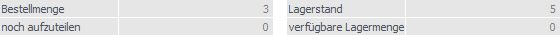
Ø Bestellmenge
An dieser Stelle wird die Bestellmenge gemäß der gewählten Bedarfszeile (obere Tabelle) angezeigt.
Ø noch aufzuteilen
Hier wird die Menge angezeigt, welche von der gewählten Bedarfszeile (obere Tabelle) noch nicht auf die Bedarfszeilen der unteren Tabelle (Kundenaufträge / Lieferantenlieferscheine / Produktionsaufträge) oder auf das Lager aufgeteilt wurde.
Ø Lagerstand
An dieser Stelle wird der aktuelle Lagerstand des Artikels angezeigt.
Ø verfügbare Menge
Hier wird die Menge angezeigt, welche noch vom Lager verfügbar ist, d.h. den Bedarfszeilen von Bedarfserzeugern der unteren Tabelle (Kundenaufträge / Lieferantenbestellungen / Produktionsaufträge) zugeordnet werden könnte.
Tabelle "Bedarfszuordnung"
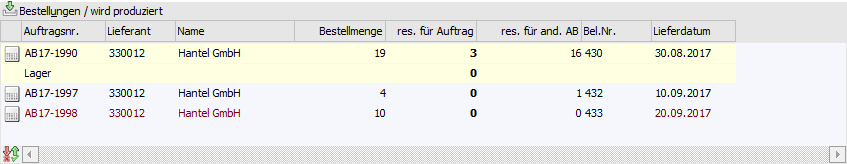
Nach Anwahl einer Bedarfszeile in der oberen Tabelle werden die zugehörigen Bedarfszeilen in der unteren Tabelle angezeigt. Die Tabelle dient hierbei dem Bearbeiten der Reservierung, wobei die Sortierung wie folgt vorgenommen wird:
ü Kundenaufträge / Lieferantenbestellungen / Produktionsaufträge für welche bereits eine Reservierung von der Ausgangsmenge vorliegt (aufsteigend nach Lieferdatum / Produktionsdatum)
ü Lager (immer vorhanden)
ü Kundenaufträge / Lieferantenbestellungen / Produktionsaufträge für welche bisher keine Reservierung von der Ausgangsmenge vorliegt (aufsteigend nach Lieferdatum / Produktionsdatum)
Wird z.B. eine höhere Menge bestellt, als jene, welche automatisch reserviert wurde, so kann die überschüssige Menge auf die übrigen Bedarfszeilen oder dem Lager aufgeteilt werden (siehe Spalte "res. von Best.").
Hinweis
Handelt es sich um eine Bedarfszeile, welche die Bedarfszeile der oberen Tabelle nicht rechtzeitig versorgt kann, so wird die Schrift der Zeile in Rot dargestellt.
Ø Bedarfserzeuger
An dieser Stelle wird durch ein Symbol dargestellt ob es sich bei der Bedarfszeile um einen Kundenauftrag, eine Lieferantenbestellung oder einen Produktionsauftrag handelt.
ü  - Kundenauftrag / Lieferantenbestellung
- Kundenauftrag / Lieferantenbestellung
ü  - Produktionsauftrag
- Produktionsauftrag
Ø Auftragsnr.
In dieser Spalte wird die Nummer des Kundenauftrags bzw. des Produktionsauftrags angezeigt.
Ø Kunde / Lieferant / Name
In diesen Spalten wird die Kundennummer bzw. Lieferantennummer samt Name des Kundenauftrags / der Lieferantenbestellung / des Produktionsauftrags angezeigt.
Ø Bestellmenge
An dieser Stelle wird die noch offene Bestellmenge des Kundenauftrags / der Lieferantenbestellung / des Produktionsauftrags angezeigt.
Ø Res. für Auftrag / res. von Best. (reserviert von Bestellung)
Hier wird die Menge eingegeben, die für die Bedarfszeile der oberen Tabelle reserviert werden soll.
Beispiel
Der Kunde "230O005 - Öhler GmbH" hat bei uns 3 Stück zum 11.09.2017 bestellt. Aktuell soll die Ware von der Lieferantenbestellung "AB17-1990" genommen werden, welche am 30.08.2017 ankommen sollte. In der Zwischenzeit gibt es aber neue Voraussetzung, da Lagerstand vorhanden ist und weitere Lieferantenbestellungen erzeugt wurden. In diesem Beispiel wird sich dafür entschieden, dass der noch nicht zugewiesene Teil der Bestellung "AB17-1997" für den Kunden reserviert wird.
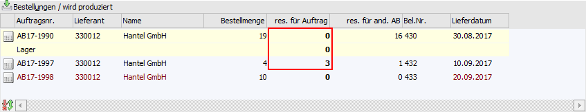
Ø res. von Lager (reserviert von Lager)
An dieser Stelle wird die Menge eingegeben, welche vom Lager für die Bedarfszeile der oberen Tabelle reserviert werden soll (nur bei der Ansicht "Bestellungen/wird prod.").
Ø res. von and. AB (reserviert von anderen Auftragsbestellungen)
In dieser Spalte wird die Menge angezeigt, die von einer anderen bereits bestehenden Auftragsbestätigung, für diese Bedarfszeile reserviert worden ist (nur bei der Ansicht "Aufträge").
Ø res. von and. Best. (reserviert von anderen Bestellungen)
In dieser Spalte wird die Menge angezeigt, die von einer anderen bereits bestehenden Lieferantenbestellung, für diese Bedarfszeile reserviert worden ist (nur bei der Ansicht "Bestellungen/wird prod.").
Ø Bel.Nr.
Handelt es sich um eine Bedarfszeile eines Kundenauftrags, so wird in dieser Spalte die Laufnummer des Belegs angezeigt.
Ø Lieferdatum
An dieser Stelle wird das Lieferdatum des Kundenauftrags / der Lieferantenbestellung / des Produktionsauftrags angezeigt. Sollte das Datum kleiner dem Lieferdatum der Bedarfszeile der oberen Tabelle sein, so wird die Schrift der Zeile in Rot dargestellt.
Tabellenbuttons

Ø Aufteilung wiederherstellen
Durch Anwahl dieses Buttons werden die getätigten und noch nicht gespeicherten Änderungen der Reservierung verworfen und der Ursprungszustand wiederhergestellt.
Ø Ausgabe Excel
Durch Anwahl des Buttons "Ausgabe Excel" wird der Inhalt der Tabelle nach Microsoft Excel übergeben.
Ø Tabelleneinstellungen speichern
Die Spalten einer Tabelle können grundsätzlich an beliebige Positionen verschoben, bzw. in der Breite entsprechend angepasst werden. Durch Anwahl des Buttons "Tabelleneinstellungen speichern" werden die Einstellungen benutzerspezifisch gespeichert und bei dem nächsten Aufruf des Programmpunktes wieder vorgeschlagen.
Ø Gesamteinstellungen speichern
Im Gegensatz zu "Tabelleneinstellungen speichern" können mit "Gesamteinstellungen speichern" mehrere Tabellenaufbauten gespeichert und nach Wunsch geladen werden. Zusätzlich werden Sonderfunktionen der Tabelle (z.B. "Spalte gruppieren") ebenfalls bei der Speicherung bedacht.
Buttons
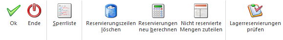
Ø Ok
Durch Anwahl des Buttons "Ok" bzw. der Taste F5 werden die Änderungen an den Reservierungen gespeichert.
Ø Ende
Durch Drücken des Buttons "Ende" bzw. der Taste ESC wird das Fenster geschlossen und alle nicht gespeicherten Reservierungseingaben verworfen.
Ø Sperrliste
Mit Hilfe des Buttons "Sperrliste" wird eine Reservierungsliste ausgegeben. Auf dieser werden alle Bedarfszeilen von Bedarfserzeugern (je nach Sichtweise, siehe Bereich "Ansicht") aufgeführt, bei denen es einen Konflikt gibt.
Ø Reservierungszeilen löschen
Durch Anwahl dieses Buttons werden entsprechend den Einschränkungen alle Reservierungszeilen gelöscht.
Ø Reservierungen neu berechnen
Mit Hilfe dieses Buttons werden alle Reservierungszeilen gelöscht und neu erzeugt.
Achtung
Wurde bei der Anzeige auf Artikel eingeschränkt, so werden nur diese Zeilen neu berechnet. Wurde auf Datum und/oder Kunde eingeschränkt (ohne Artikeleinschränkung), so werden alle Reservierungszeilen neu berechnet!
Ø nicht reservierte Mengen zuteilen
Bei Anwahl dieses Buttons werden bisher nicht reservierte Liefermengen und Lagerstand bestehenden Bedarfszeilen zugewiesen. Im Gegensatz zum Button "Reservierungen neu berechnen" werden hierbei bereits bestehende Reservierungen nicht verändert!
Hinweis
Nach dem Bestätigen einer Sicherheitsabfrage werden die nicht reservierte Mengen aller Lieferantenbestellungen und Dispozeilen von noch nicht gedruckten Lieferantenbestellungen jenen Kundenaufträgen zugewiesen, welche ebenfalls nicht reservierte Menge beinhalten. Dieses gilt auch für Produktionsdispozeilen, die keinem Kundenauftrag zu gewiesen worden sind. Bestehende Reservierungs- bzw. Lagerzeilen von zugewiesenen Aufträgen werden nicht verändert.
Ø Lagerreservierungen prüfen
Wird dieser Button gedrückt, so werden, nach einer Sicherheitsabfrage, für alle Artikel gemäß der Selektion die Lagerreservierungen mit den Lagerständen verglichen. Wenn eine Menge reserviert ist, die nicht am Lager ist, werden die Lagerreservierungszeilen aktualisiert bzw. gelöscht (bei dem mit dem jüngsten Datum beginnend).